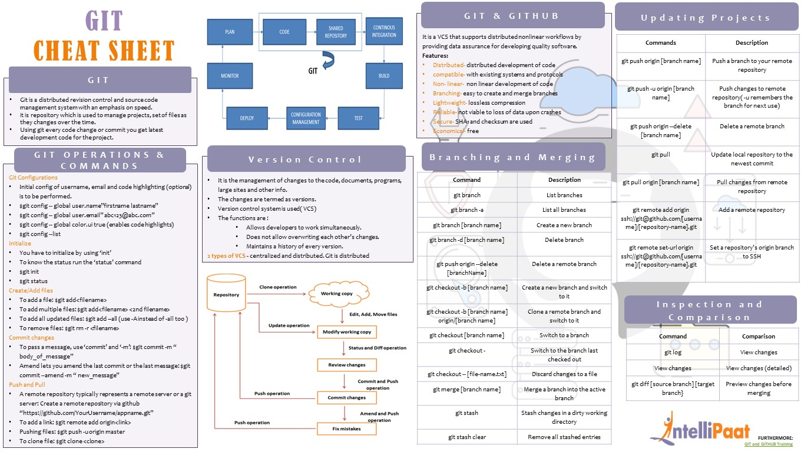
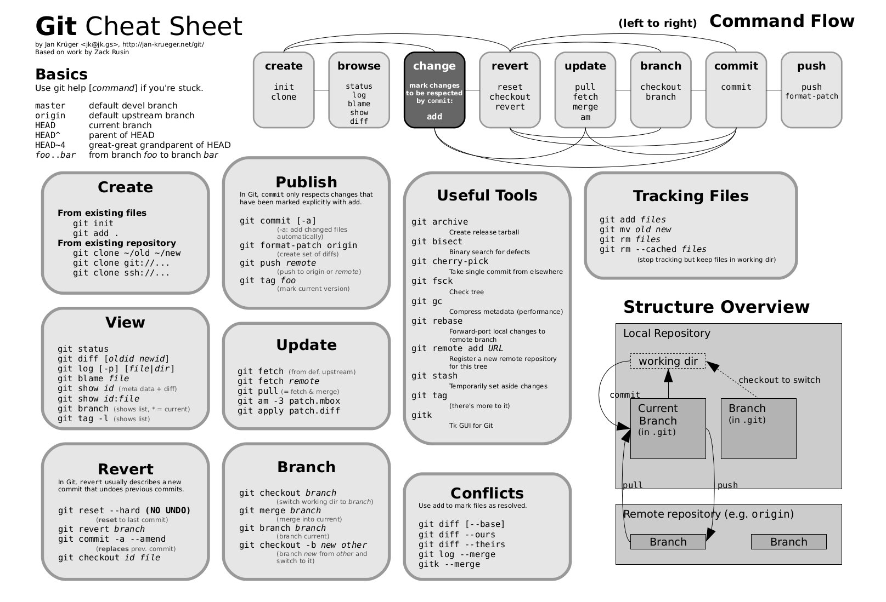
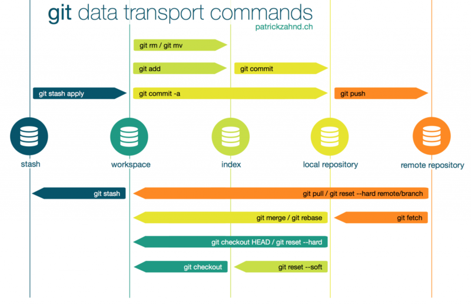
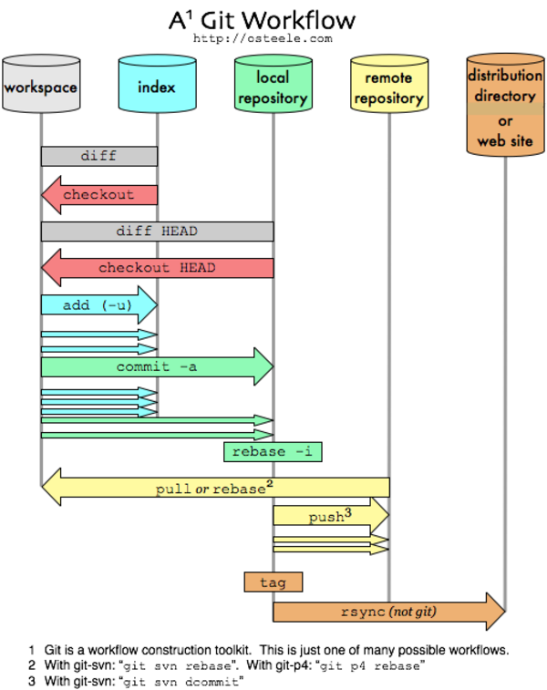
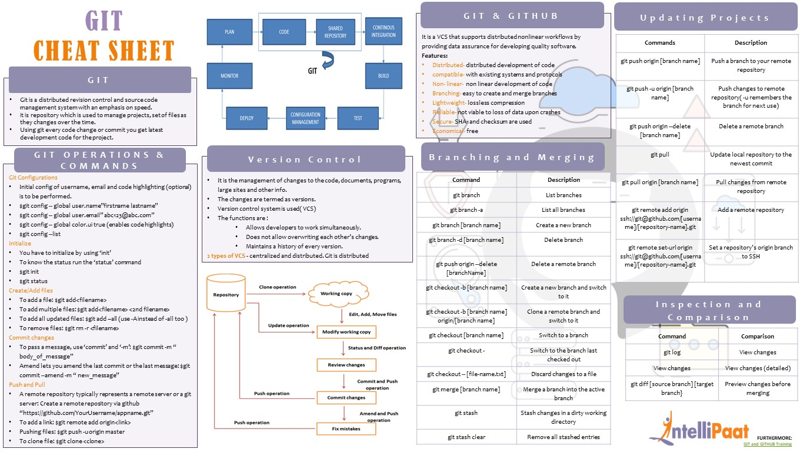
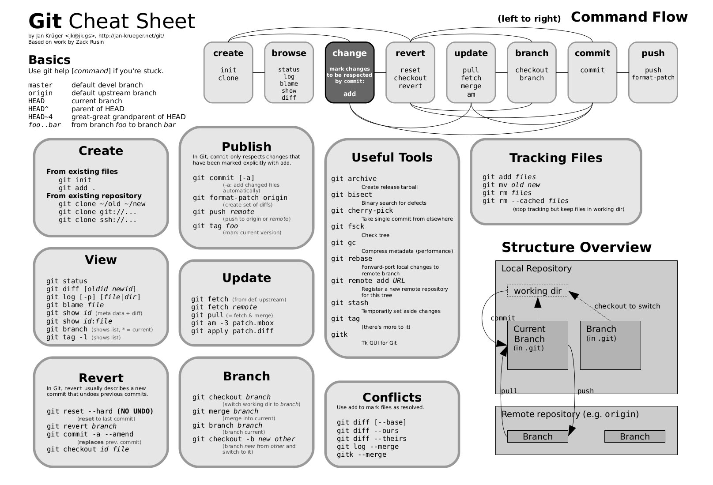
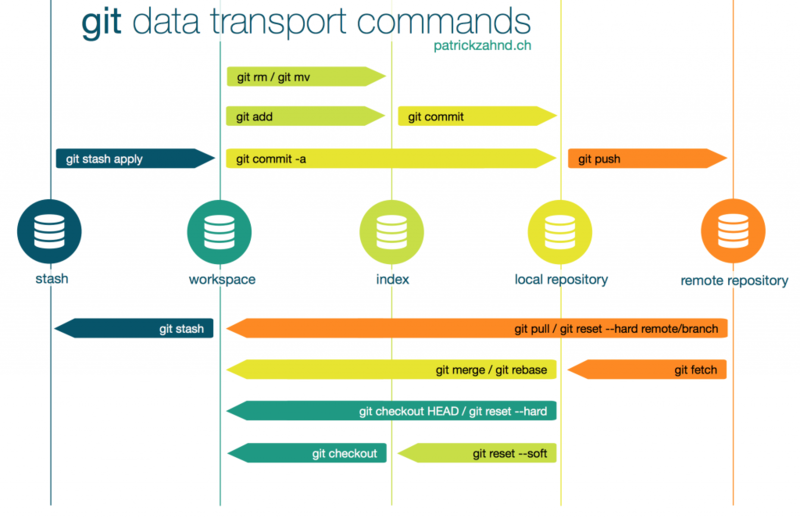
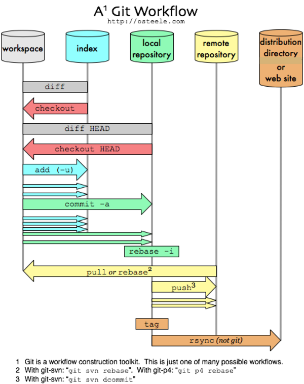

| Commande | Description |
|---|---|
| sudo apt update | mettre a jour les paquets |
| snap version | connaitre la version de son snap |
| sudo systemctl daemon-reload | recharger daemon |
 







| Commande | Description |
|---|---|
| git init | Cette commande est utilisée pour créer un nouveau dépôt GIT : |
| git config --global user.email sam@google.com | définir le mail d’un utilisateur: |
| git add temp.txt | La commande git add peut être utilisée pour ajouter des fichiers à l’index. Par exemple, la commande suivante ajoutera un fichier nommé temp.txt dans le répertoire local de l’index: |
| git clone alex@93.188.160.58:/chemin/vers/dépôt | La commande git clone est utilisée pour la vérification des dépôts. Si le dépôt se trouve sur un serveur distant, utilisez: |
| git clone /chemin/vers/dépôt | Inversement, si une copie de travail d’un dépôt local doit être créée, utilisez: |
| git commit –m “Description du commit” | La commande git commit permet de valider les modifications apportées au HEAD. Notez que tout commit ne se fera pas dans le dépôt distant. |
| git status | La commande git status affiche la liste des fichiers modifiés ainsi que les fichiers qui doivent encore être ajoutés ou validés. Usage: |
| git push origin master | Git push est une autre commandes GIT de base. Un simple push envoie les modifications locales apportées à la branche principale associée : |
| command git checkout -b nom-branche | La commande git checkout peut être utilisée pour créer des branches ou pour basculer entre elles. Par exemple nous allons créer une branche: |
| git checkout nom-branche | Pour passer simplement d’une branche à une autre, utilisez: |
| git remote –v | Cette commande remote permet à un utilisateur de se connecter à un dépôt distant. La commande suivante répertorie les dépôts distants actuellement configurés: |
| git remote add origin <93.188.160.58> | Cette commande permet à l’utilisateur de connecter le dépôt local à un serveur distant: |
| git branch | La commande git branch peut être utilisée pour répertorier, créer ou supprimer des branches. Pour répertorier toutes les branches présentes dans le dépôt, utilisez: |
| git branch –d |
Pour supprimer une branche: |
| git pull | Pour fusionner toutes les modifications présentes sur le dépôt distant dans le répertoire de travail local, la commande pull est utilisée. Usage: |
| git merge nom-branche | La commande git merge est utilisée pour fusionner une branche dans la branche active. Usage: |
| git diff --base nom-fichier | La commande git diff permet de lister les conflits. Pour visualiser les conflits d’un fichier, utilisez |
| git diff branche-source branche-cible | La commande suivante est utilisée pour afficher les conflits entre les branches à fusionner avant de les fusionner: |
| git diff | Pour simplement énumérer tous les conflits actuels, utilisez: |
| git tag 1.1.0 insert-commitID-here | Le marquage est utilisé pour marquer des commits spécifiques avec des poignées simples. Un exemple peut être: |
| git reset --hard HEAD | Git rm peut être utilisé pour supprimer des fichiers de l’index et du répertoire de travail. Usage: |
| git stash | L’une des moins connues, git stash aide à enregistrer les changements qui ne doivent pas être commit immédiatement. C’est un commit temporaire. Usage: |
| git show | Pour afficher des informations sur tout fichier git, utilisez la commande git show . Par exemple: |
| git fetch origin | Git fetch permet à un utilisateur d’extraire tous les fichiers du dépôt distant qui ne sont pas actuellement dans le répertoire de travail local. Exemple d’utilisation: |
| git ls-tree HEAD | Pour afficher un fichier arborescent avec le nom et le mode de chaque élément, et la valeur SHA-1 du blob, utilisez la commande git ls-tree . Par exemple: |
| git cat-file –p d670460b4b4aece5915caf5c68d12f560a9fe3e4 | À l’aide de la valeur SHA-1, affichez le type d’un fichier à l’aide de la commande git cat-file . Par exemple: |
| git grep "www.hostinger.com" | Git grep permet à un utilisateur de rechercher dans les arbres de contenu des expressions et / ou des mots. Par exemple, pour rechercher www.hostinger.com dans tous les fichiers, utilisez: |
| gitk | Gitk est l’interface graphique du dépôt local. Vous pouvez l’appeler en exécutant: |
| git instaweb –httpd=webrick | Avec la commande git instaweb , un serveur Web peut être exécuté par interface avec le dépôt local. Qui redirige directement vers un serveur web. Par exemple: |
| git gc | Pour optimiser le dépôt en supprimant les fichiers inutiles et les optimiser, utilisez: |
| git archive --format=tar master | La commande git archive permet à un utilisateur de créer un fichier zip ou tar contenant les composants d’un arbre du dépôt. Par exemple: |
| git prune | Via la commande git prune , les fichiers qui n’ont pas de pointeurs entrants seront supprimés. Usage: |
| git fsck | Pour effectuer une vérification d’intégrité du système de fichiers git, utilisez la commande git fsck . Tous les fichiers corrompus seront identifiés: |
| git rebase master | La commande git rebase est utilisée pour la réapplication des commits sur une autre branche. Par exemple: |
| Commande | Description |
|---|---|
| Commande | Description |
|---|---|
| apt install mysql-server | telecharger nginx |
| service mysql start | Pour démarrer mysql lorsqu’il est arrêté |
| service mysql stop | Pour arrêté mysql |
| service mysql status | connaitre l'etat de mysql |
| service mysql restart | Pour redémarrer mysql |
| service mysql reload | redemare mysql |
| service mysql force-reload | force le redemarrage de mysql |
| mysql --version | Il est parfois utile de connaître la version installée: |
| mysql -u root | Lancer la console MySQL / Si vous n'avez pas défini de mot de passe (déconseillé) : |
| mysql -u root -p | Lancer la console MySQL Si vous avez défini un mot de passe :et tapez votre mot de passe. |
| USE nom_de_la_base; | Utiliser une base de données existante |
| CREATE DATABASE nom_de_la_base; | Créer une base de données |
| SHOW DATABASES; | Liste des bases de données |
| DROP DATABASE nom_de_la_base; | Supprimer une base de données |
| SHOW TABLES; | Liste des tables de la base de données active |
| DESCRIBE nom_table; | Structure d'une table |
| ALTER TABLE nom_table RENAME AS nouveau_nom; | Renommer une table |
| sudo apt install libqt5sql5-mysql | Installer la bibliothèque Qt5 pour mysql afin de l'utiliser sous Qt : |
| sudo mysqldump maBase > maBase_backup.sql | Pour exporter la base de donnée « maBase », utilisez la commande : |
| Commande | Description |
|---|---|
| ssh-keygen | générer une paire de clé SSH |
| cd /home/"Nomutilisateur"/.ssh | permet d'aller a la racine du dossier ssh |
| id_rsa | dans le dossier .ssh id_rsa: clé privé a conserver sur son PC et à ne surtout pas partager |
| id_rsa.pub | dans le dossier .ssh id_rsa: clé publique à envoyer sur les machines avec lesquels vous voulez communiquer en SSH |
| eval "$(ssh-agent -s)" | recharger l'agent ssh |
| cat nomdelaclés | afficher la clés ssh |
| ssh-add /home/nomUtilisateur/.ssh/id_rsa | se connecter en su et taper cette commande permet d'activer les droits pour cette clés |
| Commande | Description |
|---|---|
| apt update | mettre a jour les paquets |
| sudo apt install software-properties-common sudo add-apt-repository ppa:ondrej/php sudo apt update | Maintenant, dans cette étape, nous ajoutons PHP PPA. En utilisant la commande suivante pour installer PHP 8.1. |
| apt install php8.1 | installer php8.1 |
| php-v | Pour confirmer l'installation à l'aide de la commande suivante. |
| sudo apt install php8.1-extension_name | install les extensions PHP 8.x. En utilisant la commande suivante |
| apt install php8.1-fpm php8.1 php8.1-common php8.1-mysql php8.1-xml php8.1-xmlrpc php8.1-curl php8.1-gd php8.1-imagick php8.1-cli php8.1-imap php8.1-mbstring php8.1-opcache php8.1-soap php8.1-zip php8.1-intl php8.1-bcmath unzip -y | installer php8.1 |
| service php8.1-fpm start | Pour démarrer php8.1 lorsqu’il est arrêté |
| service php8.1-fpm stop | Pour arrêté php8.1 |
| service php8.1-fpm restart | Pour redémarrer php8.1 |
| service php8.1-fpm status | connaitre l'etat de php8.1 |
| Commande | Description |
|---|---|
| sudo apt update | mettre a jour les paquets |
| sudo apt install nginx | telecharger nginx |
| service nginx start | Pour démarrer nginx lorsqu’il est arrêté |
| service nginx stop | Pour arrêté nginx |
| service nginx status | connaitre l'etat de nginx |
| service nginx restart | Pour redémarrer nginx |
| service nginx reload | Si vous procédez uniquement à des modifications de configuration, il se peut que Nginx se recharge souvent sans interrompre les connexions. Pour ce faire, tapez : |
| service nginx disable | Par défaut, Nginx est configuré pour un lancement automatique au démarrage du serveur. Si ce n’est pas ce que vous souhaitez, vous pouvez désactiver ce comportement |
| service nginx enable | Pour réactiver le service de lancement automatique au démarrage |
| cd /etc/nginx/sites-available | répertoire dans lequel vous pouvez stocker les blocs de serveur par site. |
| cd /etc/nginx/sites-enabled | répertoire dans lequel les blocs de serveur par site activés sont stockés. |
| cd /etc/nginx | répertoire de configuration Nginx |
| cd /etc/nginx/sites-available puis vi Mon_Projet | cree un fichier texte au quelle il faut ajouter les donners contenant les infos du serveur |
| ln -s /etc/nginx/sites-available/Mon_Projet /etc/nginx/sites-enabled/ | activer le fichier en créant un lien depuis celui-ci vers le répertoire sites-enabled |
| Commande | Description |
|---|---|
| sudo apt install zsh | installer zsh |
| chsh -s $(which zsh) | Paramétrage par défaut de Zsh |
| sh -c "$(curl -fsSL https://raw.github.com/robbyrussell/oh-my-zsh/master/tools/install.sh) | Installation d’Oh My Zsh |
| https://github.com/ohmyzsh/ohmyzsh/wiki/Themes | les themes ssh |
| vi .zshrc | acceder au fichier zsh pour modifier le theme |
-Installation d'un environnement de travail d'A-Z
-Tout d'abord, assurez-vous que la virtualisation est activée dans le BIOS et que votre Windows est bien à jour afin de pouvoir faire fonctionner WSL 2 ;

-Nous allons ensuite pouvoir télécharger wsl et Ubuntu depuis Microsoft store.


- Lancez Ubuntu et tapez cette commande
- Si jamais il ne fonctionne pas, vérifiez que votre système est bien à jour, que les 3 cases sont bien cochées et que la virtualisation est activée dans le BIOS !
sudo apt update
sudo apt upgrade
sudo apt install mysql-server
sudo service mysql start
- Comme vous venez de la voir nous venons d'installer et lancer Mysql, continuons :
sudo apt install php8.1
sudo apt install php8.1-fpm php8.1 php8.1-common php8.1-mysql php8.1-xml php8.1-xmlrpc php8.1-curl php8.1-gd php8.1-imagick php8.1-cli php8.1-imap php8.1-mbstring php8.1-opcache php8.1-soap php8.1-zip php8.1-intl php8.1-bcmath unzip -y
sudo service php8.1-fpm start
sudo service php8.1-fpm status
- Nous venons d'installer et lancer php8.1
sudo apt install nginx
sudo service nginx start
- Nous venons d'installer et lancer nginx, nous allons maintenant générer une paire de clés ssh et déposer la clé publique sur github :
ssh-keygen
cd /home/"Nomutilisateur"/.ssh
cat id_rsa.pub
- cette commande permet d'afficher votre clé publique ( changer le nom de la clé si jamais vous l'avez nommé autrement) copier là dans votre git hub ou dans votre git lab, dans paramètres clés ssh
il va falloir maintenant vous connecter en mode super agent sur Ubuntu afin d'autoriser la clé
sudo su
cd
eval "$(ssh-agent -s)"
ssh-add /home/florian/.ssh/id_rsa
Maintenant nous allons modifier le fichier host de windows et configurer notre futur serveur
- ouvrir votre bloc note en mode administrateur et ouvre le fichier host situer dans C:\Windows\System32\drivers\etc

- puis rentrer 127.0.0.1 suivi du nom de votre domaine

- maintenant retournons sur Ubuntu nous allons créer un fichier qui permettra de faire fonctionner le serveur nginx
cd /etc/nginx/sites-available
vi "monprojet" ici en locurence sudo vi 123des.fr
faite i puis insérez tous ce texte
- une fois copié faite echap suivi de :wq
ln -s /etc/nginx/sites-available/123des.fr /etc/nginx/sites-enabled/
/etc/init.d/nginx reload
- maintenant nous allons devoir débloquer des droits à certains de nos fichiers afin de pouvoir les modifiers et sauvegarder
chown -R utilisateur:utilisateur /home
Installation de ZSH
sudo apt install zsh
chsh -s $(which zsh)
sh -c "$(curl -fsSL https://raw.github.com/robbyrussell/oh-my-zsh/master/tools/install.sh)"
vous pouvez aussi choisir un theme ici et le changer via cette commande
vi .zshrc

-Installation de Compiler + Codeigniter
-Tout d'abord nous allons installer Compiler via c'est commande
Assurez-vous d'être dans votre répertoire personnel, puis récupérez le programme d' installation de Composer en utilisant curl :
cd
curl -sS https://getcomposer.org/installer -o /tmp/composer-setup.php
Ensuite, nous vérifierons que le programme d'installation téléchargé correspond au hachage SHA-384 du dernier programme d'installation trouvé sur la page Composer Public Keys / Signatures . À l' aide curlde , récupérez la dernière signature et stockez-la dans une variable shell :
HASH=`curl -sS https://composer.github.io/installer.sig`
Exécutez maintenant le code PHP suivant pour vérifier que le script d'installation peut être exécuté en toute sécurité :
php -r "if (hash_file('SHA384', '/tmp/composer-setup.php') === '$HASH') { echo 'Installer verified'; } else { echo 'Installer corrupt'; unlink('composer-setup.php'); } echo PHP_EOL;"
Vous verrez le résultat suivant :
Installer verified
La commande suivante téléchargera et installera Composer en tant que commande système nommée composer, sous /usr/local/bin:
sudo php /tmp/composer-setup.php --install-dir=/usr/local/bin --filename=composer
Vous verrez une sortie semblable à celle-ci :
Output All settings correct for using Composer Downloading... Composer (version 2.2.9) successfully installed to: /usr/local/bin/composer Use it: php /usr/local/bin/composer
Pour tester votre installation, exécutez :
composer
-Nous allons maintenant cree un projet via c'est commande
sudo composer create-project codeigniter4/appstarter nomduprojet
Par default le projet est crée dans /home/utilisateur/nomduprojet mais si nous le créons depuis le home , ca le créera dans le home
- maintenant nous allons créer un fichier qui permettra de faire fonctionner le serveur nginx
cd /etc/nginx/sites-available
vi "monprojet" ici en locurence sudo vi 123des.fr
faite i puis insérez tous ce texte
- une fois copié faite echap suivi de :wq
ln -s /etc/nginx/sites-available/123des.fr /etc/nginx/sites-enabled/
/etc/init.d/nginx reload
-Nous allons maintenant eteindre apache2 qui peut rentrer en conflit avec nginx
sudo service apache2 stop
-Nous allons maintenant donner des droits a notre projet dans l'element parents contant votre projet pour qu'il fonctionne avec codeigniter
cd
cd /home/
sudo chmod -R 777 projet421
faite cette commande et votre fichier devrais maintenant etre surligner en vert
ls -la
Nous allons maintenant rentrer notre url dans le fichier env qui a etais compiler
allez maintenant sur votre navigateur web et tapper votre url suivis de /index.php
vous devriez tomber sur cette affichage